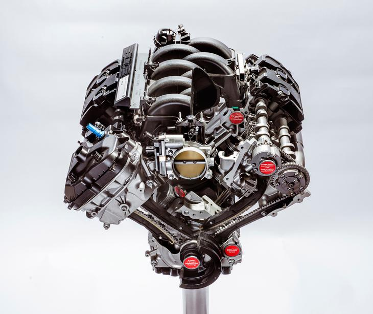

Silniki Wolnosące

Silnik wolnossący to typ motoru spalinowego, niewyposażonego w doładowanie, zasilanego w powietrze wyłącznie dzięki różnicy ciśnienia między komorą spalania w suwie ssania a ciśnieniem atmosferycznym w otoczeniu.Silniki wolnossące określa się także potocznie mianem atmosferycznych. Można też spotkać się ze skrótowym określeniem N/A, które pochodzi od angielskiego naturally aspirated.
W silnikach spalinowych podczas napełniania komory spalania, zasysane jest z otoczenia powietrze, które z paliwem tworzy mieszankę paliwowo-powietrzną.
W silnikach spalinowych podczas napełniania komory spalania, zasysane jest z otoczenia powietrze, które z paliwem tworzy mieszankę paliwowo-powietrzną.
W jednostkach doładowanych proces ten wspomagany jest przez sprężarkę, która wprowadza gaz pod ciśnieniem większym od tego, które panuje w otoczeniu. Silniki wolnossące nie są wyposażone w tego typu rozwiązanie, przez co do komory spalania trafia dawka powietrza, która została pobrana przez motor w wyniku zmniejszenia ciśnienia wewnątrz jednostki.
Silniki wolnossące występują zarówno w wariancie wysokoprężnym, czyli w dieslach, jak i w odmianie o zapłonie iskrowym, czyli w jednostkach benzynowych. Współcześnie w samochodach produkowanych seryjnie nie stosuje się już jednak typu ZS bez doładowania. W sprzedaży silniki wolnossące oferowane są już jedynie w wersji benzynowej.
By zwiększyć moc silnika spalinowego, zaczęto stosować wspomniane już doładowanie, w formie turbosprężarek oraz sprężarek napędzanych mechanicznie przez silnik. Dzięki temu motor spalinowy otrzymuje znacznie większą objętość powietrza w jednostce czasu, niż w sytuacji, w której pobiera ją ona w suwie ssania.
By zwiększyć moc silnika spalinowego, zaczęto stosować wspomniane już doładowanie, w formie turbosprężarek oraz sprężarek napędzanych mechanicznie przez silnik. Dzięki temu motor spalinowy otrzymuje znacznie większą objętość powietrza w jednostce czasu, niż w sytuacji, w której pobiera ją ona w suwie ssania.